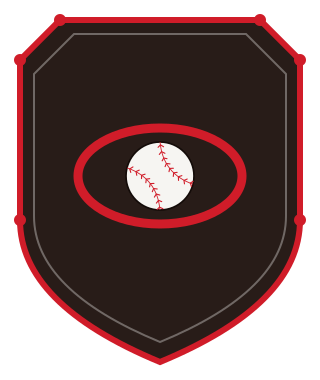
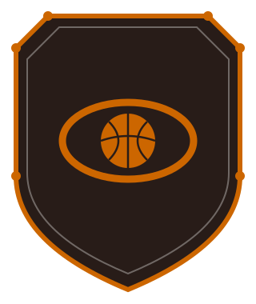
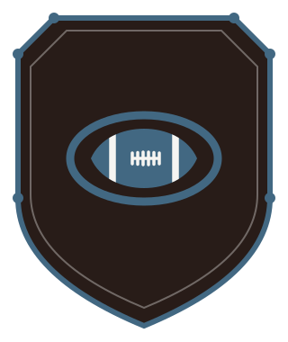

One recognizable family
Every expression needed to feel related, from a 32-pixel favicon to a full interface.
Brand Identity · Product Design · Frontend
A civic sports identity carried from a single forged shield into a dimensional mark and a working fan experience.
01 / The Brief
The challenge was not simply to draw a crest. It was to build a civic identity flexible enough to organize distinct sports, local franchises, live scores, rosters, schedules, and postseason play without losing its character.
Every expression needed to feel related, from a 32-pixel favicon to a full interface.
Baseball, basketball, and flag football each carry a clear accent without splitting the league apart.
The identity had to survive real product states: dense standings, filters, brackets, team pages, and mobile layouts.
02 / Identity System
A chamfered steel plate, six rivets, and one central field create the fixed grammar. Sport iconography and color do the variable work.



Responsive Mark
The detailed crest yields to a simplified form at compact sizes. The geometry stays recognizable while fine rivets and linework step aside.
03 / Dimensional Expression
The three-dimensional crest is not a separate logo. It is the same silhouette, proportions, rivet coordinates, and monogram translated into material, light, and motion.
04 / System Architecture
Each neighborhood franchise can move through every sport while the shared data model keeps naming, standings, schedules, rosters, and brackets connected.
05 / Fan Experience
The portal proves the identity under pressure: three sport contexts, eight team destinations, dense data, filters, postseason brackets, and responsive behavior.
06 / Build Sequence
The work progressed from durable rules to expressive moments, then into the product states most likely to expose weak decisions.
Shield silhouette, rivet map, type, and core palette established the non-negotiables.
Sport variants and small-scale tests showed where the system could flex.
Deterministic data connected franchises, sports, rosters, games, and brackets.
Mobile layouts, filter states, keyboard routes, and failure states turned the concept into a stable prototype.
07 / Reflection
The strongest brand system is not the one with the most marks. It is the one that still feels itself when the interface gets complicated.
Forge City Circuit is a fictional portfolio prototype. The league, franchises, schedules, scores, rosters, venues, and season data were created solely to demonstrate the identity and product system; no live league or production service is implied.
Continue Exploring
Return to the visual project home or go directly into the working fan experience.